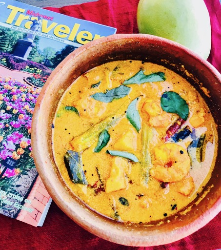

                                    <figure class="cards double">                                        
                                        <figcaption class="caption">
                                        
                                            <!--  Copy your recipie in here -->
                                            <h1><span style="color: #993366;"><strong>Shrimp Mango Curry</strong></span></h1>
                                            <p><strong>Ingredients</strong></p>
                                            <ul>
                                            <li>Shrimp 1 lb.</li>
                                            <li>Raw mango 1 small - diced</li>
                                            <li>Drumstick (Muringa) 2 - cut to 2&rdquo; pieces</li>
                                            <li>Ginger a small piece</li>
                                            <li>Green chilies 2</li>
                                            <li>Coconut grated 1 cup</li>
                                            <li>Cumin seeds 1 tsp</li>
                                            <li>Chili powder 1tsp or as per spice level</li>
                                            <li>Turmeric &frac12; tsp</li>
                                            <li>Curry leaf few</li>
                                            <li>Shallot 3 finely chopped</li>
                                            <li>Mustard 1 tsp</li>
                                            <li>Dry red chilies 2-3</li>
                                            <li>Oil 2 tsp</li>
                                            <li>Salt 1 tsp</li>
                                            </ul>
                                            <p><strong>Method</strong></p>
                                            <p>Peel skin, devein and clean shrimp. Peel skin of mango and dice it.</p>
                                            <p>Cook shrimp, drumsticks, mango, green chilies and ginger with chili powder, turmeric, salt, curry leaf and a cup of water.</p>
                                            <p>In a blender grind coconut with turmeric, cumin and &frac12; cup water.</p>
                                            <p>When shrimp is cooked add ground coconut mixture. Bring to boil.</p>
                                            <p>In a pan add oil, temper mustard seeds, shallots, red chilies and curry leaves. Pour it over the shrimp.</p>
                                            <p>&nbsp;</p>
                                            <p>&nbsp;</p>
                                            <p>&nbsp;</p>
                                            <!-- Copy Up to here-->

                                        </figcaption>
                                        
                                    </figure>
                                    
                           